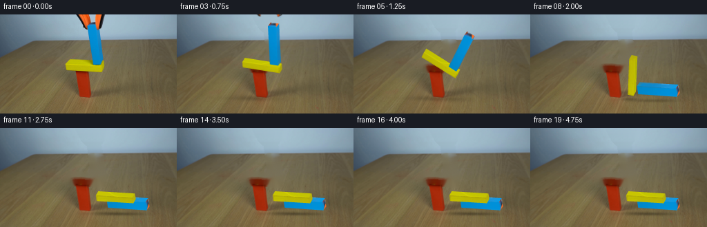
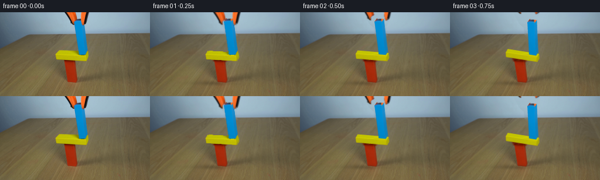
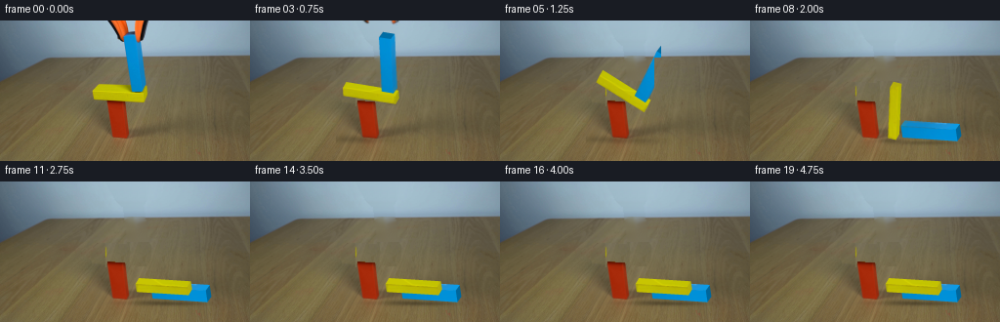
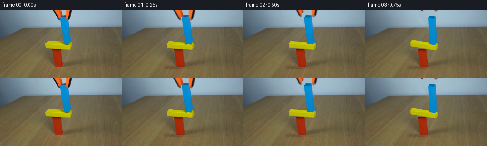
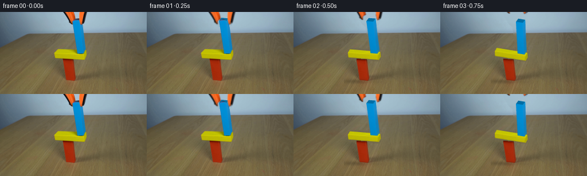
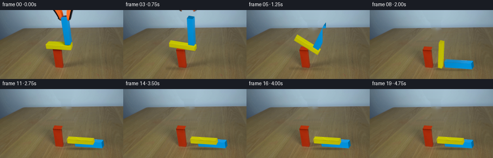
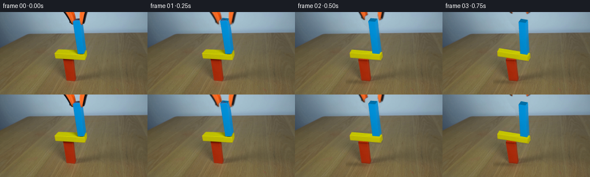

CODING AGENTS AS PIXEL WORLD MODELS
traex/GPT-6.1-Sol · 0183
点击播放 · 原生 RGB 像素
逐轮保存的候选
回放视频、检查图与代码变化。
每份候选均可单独播放。实际图片检查记录在下方工具轨迹中。
候选 01播放与检查图
点击播放 · 原生 RGB 像素


展开代码变化
--- 上一保存版本
+++ 本次保存版本
@@ -0,0 +1,275 @@
+from pathlib import Path
+import math
+import numpy as np
+from PIL import Image
+import cv2
+from scipy.ndimage import distance_transform_edt
+import artifact_io
+
+ROOT=Path(__file__).resolve().parent
+W,H=256,144
+S=4
+I=np.asarray(Image.open(ROOT/'first_frame.png').convert('RGB')).copy()
+P=np.array([[1.,.143],[.065,1.]])
+
+# Small non-learning planar rigid-body calculation. All distances are in image-scale units.
+class Body:
+ def __init__(self,p,size,m):
+ self.p=np.array(p,float); self.size=np.array(size,float); self.a=0.; self.v=np.zeros(2); self.w=0.
+ self.im=1/m; self.ii=12/(m*sum(self.size**2))
+ def verts(self):
+ x,y=self.size/2; c,s=np.cos(self.a),np.sin(self.a)
+ return np.array([[-x,-y],[x,-y],[x,y],[-x,y]])@np.array([[c,s],[-s,c]])+self.p
+
+def cross(a,b): return a[0]*b[1]-a[1]*b[0]
+def clip(pts,n,off):
+ d=[np.dot(p,n)-off for p in pts]; out=[]
+ for p,z in zip(pts,d):
+ if z<=0:out.append(p)
+ if d[0]*d[1]<0:out.append(pts[0]+(pts[1]-pts[0])*(d[0]/(d[0]-d[1])))
+ return out[:2]
+def contacts(A,B):
+ va,vb=A.verts(),B.verts(); best=(-1e9,None,None,None)
+ for ref,oth,rev in [(va,vb,False),(vb,va,True)]:
+ for i in range(4):
+ p,q=ref[i],ref[(i+1)%4];e=q-p;n=np.array([e[1],-e[0]])/np.linalg.norm(e)
+ sep=min(oth@n)-np.dot(p,n)
+ if sep>0:return []
+ if sep>best[0]:best=(sep,i,rev,n)
+ sep,idx,rev,n=best; ref,oth=(vb,va) if rev else(va,vb)
+ p,q=ref[idx],ref[(idx+1)%4];t=(q-p)/np.linalg.norm(q-p)
+ norms=[]
+ for i in range(4):
+ e=oth[(i+1)%4]-oth[i];nn=np.array([e[1],-e[0]])/np.linalg.norm(e);norms.append(np.dot(nn,n))
+ i=np.argmin(norms);pts=[oth[i],oth[(i+1)%4]];pts=clip(pts,-t,-np.dot(p,t))
+ if len(pts)<2:return []
+ pts=clip(pts,t,np.dot(q,t));out=[]
+ for pt in pts:
+ d=np.dot(pt-p,n)
+ if d<=.001:out.append((pt-n*d*.5,-n if rev else n,-d))
+ return out
+
+def solve(A,B,pt,n,pen,pos=False):
+ ra=pt-A.p;rb=pt-B.p;ca=cross(ra,n);cb=cross(rb,n)
+ k=A.im+B.im+ca*ca*A.ii+cb*cb*B.ii
+ if not k:return
+ if pos:
+ j=max(0,pen-.018)*.3/k
+ A.p-=j*n*A.im;A.a-=j*ca*A.ii;B.p+=j*n*B.im;B.a+=j*cb*B.ii;return
+ va=A.v+A.w*np.array([-ra[1],ra[0]]);vb=B.v+B.w*np.array([-rb[1],rb[0]])
+ vn=np.dot(vb-va,n)
+ if vn>=0:return
+ j=-(1.03 if vn<-15 else 1)*vn/k;imp=j*n
+ A.v-=imp*A.im;A.w-=cross(ra,imp)*A.ii;B.v+=imp*B.im;B.w+=cross(rb,imp)*B.ii
+ t=np.array([-n[1],n[0]]);cat=cross(ra,t);cbt=cross(rb,t)
+ va=A.v+A.w*np.array([-ra[1],ra[0]]);vb=B.v+B.w*np.array([-rb[1],rb[0]])
+ jt=-np.dot(vb-va,t)/(A.im+B.im+cat*cat*A.ii+cbt*cbt*B.ii)
+ jt=np.clip(jt,-j*.55,j*.55);imp=jt*t
+ A.v-=imp*A.im;A.w-=cross(ra,imp)*A.ii;B.v+=imp*B.im;B.w+=cross(rb,imp)*B.ii
+
+def dynamics():
+ floor=Body((0,500),(10000,1000),1);floor.im=floor.ii=0
+ bodies=[Body((0,-17.5),(16,35),.8),Body((-1,-39),(53,8),.6),Body((19,-71),(12,56),1.)]
+ bodies[0].im=bodies[0].ii=0
+ history=[];dt=1/240
+ for step in range(1100):
+ history.append([(b.p.copy(),b.a) for b in bodies])
+ for b in bodies:
+ b.v[1]+=280*dt if b.im else 0;b.v*=.9998;b.w*=.9998;b.p+=b.v*dt;b.a+=b.w*dt
+ cs=[]
+ for i,A in enumerate(bodies):
+ for pt in A.verts():
+ if pt[1]>0:cs.append((A,floor,pt,np.array([0.,1.]),pt[1]))
+ for B in bodies[i+1:]:
+ for pt,n,pen in contacts(A,B):cs.append((A,B,pt,n,pen))
+ for iteration in range(10):
+ for co in cs:solve(*co)
+ for iteration in range(3):
+ for co in cs:solve(*co,pos=True)
+ return history
+
+C0={'yellow':np.array([121.7,77.9]),'blue':np.array([136.05,44.15])}
+SIZE={'yellow':(53.,8.),'blue':(12.,56.)}
+DEPTH={'yellow':np.array([3.5,-6.]),'blue':np.array([4.,-5.4])}
+INIT={'yellow':np.array([-1.,-39.]),'blue':np.array([19.,-71.])}
+
+def corners(name,center=None,angle=0):
+ w,h=SIZE[name];c,s=np.cos(angle),np.sin(angle)
+ q=np.array([[-w/2,-h/2],[w/2,-h/2],[w/2,h/2],[-w/2,h/2]])
+ return q@np.array([[c,s],[-s,c]])@P.T+(C0[name] if center is None else center)
+
+def poly_mask(poly,scale=1):
+ a=np.zeros((H*scale,W*scale),np.uint8)
+ cv2.fillPoly(a,[np.round(np.array(poly)*scale).astype(np.int32)],255)
+ return a
+
+def make_background():
+ # Remove only the moving objects, retaining the photograph's table, grain and fixed red support.
+ mask=np.zeros((H,W),np.uint8)
+ cv2.fillPoly(mask,[np.array([[93,72],[100,64],[137,65],[153,66],[153,78],[149,85],[128,84],[95,82]],np.int32)],255)
+ cv2.fillPoly(mask,[np.array([[125,11],[143,10],[152,68],[147,75],[133,74]],np.int32)],255)
+ cv2.fillPoly(mask,[np.array([[109,0],[152,0],[150,17],[144,24],[125,24],[119,18]],np.int32)],255)
+ mask=cv2.dilate(mask,np.ones((3,3),np.uint8))
+ r,g,b=I.transpose(2,0,1).astype(float)
+ red=(r>75)&(g<r*.54)&(b<r*.45)&(np.indices((H,W))[0]>=81)
+ mask[red]=0
+ out=cv2.inpaint(I,mask,5,cv2.INPAINT_TELEA)
+ # In the upper blue-grey backdrop, use horizontally neighboring real pixels.
+ yy,xx=np.indices((H,W))
+ for y in range(36):
+ left,right=out[y,104].astype(float),out[y,157].astype(float)
+ for x in np.where(mask[y]>0)[0]:
+ weight=(x-104)/53
+ out[y,x]=np.clip(left*(1-weight)+right*weight,0,255)
+ return out
+
+
+def extract_texture(poly,nx,ny,kind):
+ # Recover paint texture from the visible corresponding face of the input photograph.
+ u=(np.arange(nx)+.5)/nx; v=(np.arange(ny)+.5)/ny
+ uu,vv=np.meshgrid(u,v)
+ p=np.array(poly,float)
+ xy=(1-uu)[...,None]*(1-vv)[...,None]*p[0]+uu[...,None]*(1-vv)[...,None]*p[1]+uu[...,None]*vv[...,None]*p[2]+(1-uu)[...,None]*vv[...,None]*p[3]
+ tex=cv2.remap(I,xy[:,:,0].astype(np.float32),xy[:,:,1].astype(np.float32),cv2.INTER_LINEAR).astype(float)
+ r,g,b=tex.transpose(2,0,1)
+ if kind.startswith('blue'):
+ ok=(r<70)&(b>160)&(g>115)&(xy[:,:,1]>25)&(xy[:,:,1]<69)
+ else:
+ ok=(r>165)&(g>155)&(b<12)
+ if kind=='yellowtop':ok &= xy[:,:,0]<122
+ if np.any(ok):
+ _,ind=distance_transform_edt(~ok,return_indices=True)
+ tex[~ok]=tex[ind[0][~ok],ind[1][~ok]]
+ tex=np.clip(tex,0,255).astype(np.uint8)
+ return tex
+
+TEX={}
+def setup_textures():
+ for name in ['yellow','blue']:
+ front=corners(name);back=front+DEPTH[name]
+ TEX[(name,'front')]=extract_texture(front,212 if name=='yellow' else 48,32 if name=='yellow' else 224,name+'front')
+ TEX[(name,'top')]=extract_texture([front[0],front[1],back[1],back[0]],212 if name=='yellow' else 48,28,name+'top')
+ TEX[(name,'right')]=extract_texture([front[1],back[1],back[2],front[2]],20,32 if name=='yellow' else 224,name+'right')
+
+
+def warp_face(canvas,texture,quad,factor=1.):
+ h,w=texture.shape[:2]
+ target=np.float32(quad)*S
+ if abs(cv2.contourArea(target))<.1:return
+ M=cv2.getPerspectiveTransform(np.float32([[0,0],[w,0],[w,h],[0,h]]),target)
+ rgb=cv2.warpPerspective(texture.astype(np.float32)*factor,M,(W*S,H*S),flags=cv2.INTER_LINEAR,borderMode=cv2.BORDER_REPLICATE)
+ alpha=poly_mask(quad,S).astype(np.float32)/255
+ canvas[:]=canvas*(1-alpha[:,:,None])+rgb*alpha[:,:,None]
+
+
+def draw_block(canvas,name,pos,angle):
+ center=C0[name]+P@(pos-INIT[name]);front=corners(name,center,angle);back=front+DEPTH[name]
+ # All front planes face the camera. The visible rim depends on its projected outward normal.
+ rim=[]
+ for k in range(4):
+ e=front[(k+1)%4]-front[k];n=np.array([e[1],-e[0]])
+ if n@DEPTH[name]>0:
+ rim.append(k)
+ for k in rim:
+ if k==0:
+ tex=TEX[(name,'top')];quad=[front[0],front[1],back[1],back[0]]
+ fac=.96+.06*math.cos(angle)
+ elif k==1:
+ tex=TEX[(name,'right')];quad=[front[1],back[1],back[2],front[2]];fac=1.
+ elif k==2:
+ tex=TEX[(name,'top')];quad=[front[3],front[2],back[2],back[3]];fac=1.02
+ else:
+ tex=TEX[(name,'right')];quad=[front[0],back[0],back[3],front[3]];fac=1.07
+ warp_face(canvas,tex,quad,fac)
+ warp_face(canvas,TEX[(name,'front')],front,1.+.018*math.sin(angle))
+
+
+def tool_sprites():
+ # Preserve the small orange and rubber jaws from the source instead of inventing a new mechanism.
+ polygons=[[[109,0],[129,0],[132,12],[128,16],[128,22],[124,24],[119,19]],
+ [[138,0],[152,0],[150,12],[147,20],[143,24],[140,24],[138,18]]]
+ sprites=[]
+ for poly in polygons:
+ zone=poly_mask(poly).astype(float)/255
+ # Local backdrop around both jaws is unobstructed to the right and left.
+ bg=np.zeros_like(I,float)
+ for y in range(26):
+ bg[y]=np.linspace(I[y,106],I[y,157],W) # replaced below with exact x-weight
+ x=np.arange(W);u=(x-106)/51
+ bg[y]=I[y,106].astype(float)[None,:]*(1-u[:,None])+I[y,157].astype(float)[None,:]*u[:,None]
+ r,g,b=I.transpose(2,0,1).astype(float)
+ opaque=((r>90)&(r>g*1.3)&(r>b*1.4))|((np.maximum.reduce([r,g,b])<72))
+ diff=np.linalg.norm(I.astype(float)-bg,axis=2)
+ alpha=np.clip((diff-15)/80,0,1)*zone
+ alpha[opaque&(zone>0)]=1
+ # Exclude the blue wood from the tool cutouts.
+ blue=(b>r*1.5)&(b>g*1.1)&(g<155)
+ alpha[blue]=0
+ rgb=np.where(alpha[:,:,None]>.03,(I.astype(float)-bg*(1-alpha[:,:,None]))/np.maximum(alpha[:,:,None],.03),0)
+ sprites.append((np.clip(rgb,0,255).astype(np.float32),alpha.astype(np.float32)))
+ return sprites
+
+
+def draw_tool(canvas,sprites,t):
+ # The clamp opens first and then withdraws vertically without camera movement.
+ opening=min(1.,max(0.,t/.5));opening=opening*opening*(3-2*opening)
+ up=max(0.,t-.23)
+ dy=-min(65.,22*up+28*up*up)
+ for i,(rgb,alpha) in enumerate(sprites):
+ dx=(-5.5 if i==0 else 5.5)*opening
+ M=np.float32([[1,0,dx],[0,1,dy]])
+ # Premultiply so no dark seam is produced by the subpixel translation.
+ a=cv2.warpAffine(alpha,M,(W,H),flags=cv2.INTER_LINEAR)
+ prem=cv2.warpAffine(rgb*alpha[:,:,None],M,(W,H),flags=cv2.INTER_LINEAR)
+ a=cv2.resize(a,(W*S,H*S),interpolation=cv2.INTER_LINEAR)
+ prem=cv2.resize(prem,(W*S,H*S),interpolation=cv2.INTER_LINEAR)
+ canvas[:]=canvas*(1-a[:,:,None])+prem
+
+
+def shadows(base,states):
+ yy,xx=np.indices((H,W),dtype=float);opacity=np.zeros((H,W),float)
+ for name,idx in [('yellow',1),('blue',2)]:
+ pos,a=states[idx];w,h=SIZE[name]
+ center=C0[name]+P@(pos-INIT[name])
+ q=corners(name,center,a)
+ contact_y=max(q[:,1]);alt=max(0,119.4-contact_y)
+ x=center[0]-alt*.42-4;y=121.1+(center[0]-122)*.06
+ sx=(abs(math.cos(a))*w+abs(math.sin(a))*h)/2+alt*.22+3
+ sy=2.2+alt*.04
+ strength=.20*np.exp(-alt/65)
+ opacity+=strength*np.exp(-((xx-x)/sx)**2-((yy-y)/sy)**2)
+ return base.astype(float)*(1-opacity[:,:,None])
+
+
+def main():
+ setup_textures(); bg=make_background(); sprites=tool_sprites(); history=dynamics()
+ Image.fromarray(bg).save(ROOT/'.tmp/background.png')
+ frames=[I.copy()]
+ for f in range(1,20):
+ t=f/4
+ # The first quarter-second is the tool releasing the newly seated block.
+ tau=max(0.,t-.32)
+ state=history[min(len(history)-1,int(tau*240))]
+ canvas=cv2.resize(shadows(bg,state).astype(np.float32),(W*S,H*S),interpolation=cv2.INTER_CUBIC)
+ # Blue is farther back once down on the tabletop; yellow lies across its near edge.
+ if state[2][1]>1.05:
+ draw_block(canvas,'blue',*state[2]);draw_block(canvas,'yellow',*state[1])
+ else:
+ draw_block(canvas,'yellow',*state[1]);draw_block(canvas,'blue',*state[2])
+ draw_tool(canvas,sprites,t)
+ rgb=np.clip(cv2.resize(canvas,(W,H),interpolation=cv2.INTER_AREA),0,255).astype(np.uint8)
+ # During the initial unchanging seated pose use the source wood and its original contact shading.
+ if tau==0:
+ mask=np.zeros((H,W),np.uint8)
+ for name in ['yellow','blue']:
+ fr=corners(name);cv2.fillPoly(mask,[cv2.convexHull(np.float32(np.r_[fr,fr+DEPTH[name]])).astype(np.int32)],255)
+ # Keep only real wood, not the withdrawing clamp.
+ r,g,b=I.transpose(2,0,1).astype(float)
+ wood=((r>125)&(g>95)&(b<g*.6)&(np.indices((H,W))[0]>50))|((b>r*1.55)&(b>g*1.1)&(g<155))
+ rgb[wood&(mask>0)]=I[wood&(mask>0)]
+ frames.append(rgb)
+ frames=np.stack(frames)
+ artifact_io.save(frames,ROOT)
+ assert np.array_equal(frames[0],I)
+
+if __name__=='__main__':main()
候选 02播放与检查图
点击播放 · 原生 RGB 像素


展开代码变化
--- 上一保存版本
+++ 本次保存版本
@@ -112,8 +112,19 @@
mask=cv2.dilate(mask,np.ones((3,3),np.uint8))
r,g,b=I.transpose(2,0,1).astype(float)
red=(r>75)&(g<r*.54)&(b<r*.45)&(np.indices((H,W))[0]>=81)
- mask[red]=0
+ # Hide the narrow original support edge too while filling, to avoid propagating red paint into the table.
+ mask[(np.indices((H,W))[0]<90)&(np.indices((H,W))[0]>80)&(np.indices((H,W))[1]>106)&(np.indices((H,W))[1]<133)]=255
out=cv2.inpaint(I,mask,5,cv2.INPAINT_TELEA)
+ # The tabletop texture is rebuilt from neighboring strips rather than blurred over the old paint.
+ for y in range(62,88):
+ for x in np.where(mask[y]>0)[0]:
+ if x<108: src=x-16
+ elif x>132: src=x+20
+ else: src=x+42
+ out[y,x]=I[y,min(254,max(0,src))]
+ out[red]=I[red]
+ # Restore the complete photographed red support below the moving shelf.
+ out[84:122,109:134]=I[84:122,109:134]
# In the upper blue-grey backdrop, use horizontally neighboring real pixels.
yy,xx=np.indices((H,W))
for y in range(36):
@@ -149,6 +160,10 @@
front=corners(name);back=front+DEPTH[name]
TEX[(name,'front')]=extract_texture(front,212 if name=='yellow' else 48,32 if name=='yellow' else 224,name+'front')
TEX[(name,'top')]=extract_texture([front[0],front[1],back[1],back[0]],212 if name=='yellow' else 48,28,name+'top')
+ if name=='blue':
+ # The top is partly occluded by the clamp in frame 00; use visible blue paint and darker end-grain.
+ top=cv2.resize(TEX[(name,'front')][30:70],(48,28)).astype(float)
+ TEX[(name,'top')]=np.clip(top*.76,0,255).astype(np.uint8)
TEX[(name,'right')]=extract_texture([front[1],back[1],back[2],front[2]],20,32 if name=='yellow' else 224,name+'right')
@@ -163,7 +178,7 @@
def draw_block(canvas,name,pos,angle):
- center=C0[name]+P@(pos-INIT[name]);front=corners(name,center,angle);back=front+DEPTH[name]
+ center=C0[name]+P@(pos-INIT[name]);center[1]+= (4. if name=='blue' else 7.)*min(1.,abs(angle)/(math.pi/2 if name=='blue' else math.pi));front=corners(name,center,angle);back=front+DEPTH[name]
# All front planes face the camera. The visible rim depends on its projected outward normal.
rim=[]
for k in range(4):
@@ -194,7 +209,6 @@
# Local backdrop around both jaws is unobstructed to the right and left.
bg=np.zeros_like(I,float)
for y in range(26):
- bg[y]=np.linspace(I[y,106],I[y,157],W) # replaced below with exact x-weight
x=np.arange(W);u=(x-106)/51
bg[y]=I[y,106].astype(float)[None,:]*(1-u[:,None])+I[y,157].astype(float)[None,:]*u[:,None]
r,g,b=I.transpose(2,0,1).astype(float)
@@ -258,6 +272,12 @@
draw_block(canvas,'yellow',*state[1]);draw_block(canvas,'blue',*state[2])
draw_tool(canvas,sprites,t)
rgb=np.clip(cv2.resize(canvas,(W,H),interpolation=cv2.INTER_AREA),0,255).astype(np.uint8)
+ # Restore all untouched pixels verbatim, preventing a resize from softening the fixed shot.
+ moving_region=np.zeros((H,W),bool)
+ moving_region[:38,100:165]=True
+ moving_region[38:89,89:158]=True
+ moving_region[85:133,88:235]=True
+ rgb[~moving_region]=I[~moving_region]
# During the initial unchanging seated pose use the source wood and its original contact shading.
if tau==0:
mask=np.zeros((H,W),np.uint8)
候选 03播放与检查图
点击播放 · 原生 RGB 像素

展开代码变化
--- 上一保存版本
+++ 本次保存版本
@@ -116,12 +116,13 @@
mask[(np.indices((H,W))[0]<90)&(np.indices((H,W))[0]>80)&(np.indices((H,W))[1]>106)&(np.indices((H,W))[1]<133)]=255
out=cv2.inpaint(I,mask,5,cv2.INPAINT_TELEA)
# The tabletop texture is rebuilt from neighboring strips rather than blurred over the old paint.
+ grain=cv2.GaussianBlur(I.astype(np.float32),(7,5),0)
for y in range(62,88):
for x in np.where(mask[y]>0)[0]:
- if x<108: src=x-16
- elif x>132: src=x+20
- else: src=x+42
- out[y,x]=I[y,min(254,max(0,src))]
+ u=np.clip((x-89)/69,0,1)
+ color=I[y,89].astype(float)*(1-u)+I[y,158].astype(float)*u
+ src=min(250,166+x-93)
+ out[y,x]=np.clip(color+.8*(I[y,src].astype(float)-grain[y,src]),0,255)
out[red]=I[red]
# Restore the complete photographed red support below the moving shelf.
out[84:122,109:134]=I[84:122,109:134]
@@ -259,6 +260,7 @@
setup_textures(); bg=make_background(); sprites=tool_sprites(); history=dynamics()
Image.fromarray(bg).save(ROOT/'.tmp/background.png')
frames=[I.copy()]
+ baseline=cv2.resize(cv2.resize(bg.astype(np.float32),(W*S,H*S),interpolation=cv2.INTER_CUBIC),(W,H),interpolation=cv2.INTER_AREA)
for f in range(1,20):
t=f/4
# The first quarter-second is the tool releasing the newly seated block.
@@ -271,7 +273,7 @@
else:
draw_block(canvas,'yellow',*state[1]);draw_block(canvas,'blue',*state[2])
draw_tool(canvas,sprites,t)
- rgb=np.clip(cv2.resize(canvas,(W,H),interpolation=cv2.INTER_AREA),0,255).astype(np.uint8)
+ rgb=np.clip(cv2.resize(canvas,(W,H),interpolation=cv2.INTER_AREA)+bg.astype(np.float32)-baseline,0,255).round().astype(np.uint8)
# Restore all untouched pixels verbatim, preventing a resize from softening the fixed shot.
moving_region=np.zeros((H,W),bool)
moving_region[:38,100:165]=True
@@ -280,6 +282,9 @@
rgb[~moving_region]=I[~moving_region]
# During the initial unchanging seated pose use the source wood and its original contact shading.
if tau==0:
+ # No physical motion yet: retain all pixels except the retreating clamp and the tiny revealed wood at its tips.
+ old=rgb.copy();rgb=I.copy()
+ rgb[:26,107:160]=old[:26,107:160]
mask=np.zeros((H,W),np.uint8)
for name in ['yellow','blue']:
fr=corners(name);cv2.fillPoly(mask,[cv2.convexHull(np.float32(np.r_[fr,fr+DEPTH[name]])).astype(np.int32)],255)
候选 04播放与检查图
点击播放 · 原生 RGB 像素


展开代码变化
--- 上一保存版本
+++ 本次保存版本
@@ -267,6 +267,11 @@
tau=max(0.,t-.32)
state=history[min(len(history)-1,int(tau*240))]
canvas=cv2.resize(shadows(bg,state).astype(np.float32),(W*S,H*S),interpolation=cv2.INTER_CUBIC)
+ # The small red top surface was occluded by the yellow beam in the initial view.
+ # Reveal its painted end grain when the moving beam uncovers it.
+ redtop=cv2.resize(I[90:95,112:126],(68,28)).astype(np.float32)
+ redtop*=np.array([1.08,1.17,1.2])
+ warp_face(canvas,redtop,[[110,83],[127,84],[130,77],[113,76]])
# Blue is farther back once down on the tabletop; yellow lies across its near edge.
if state[2][1]>1.05:
draw_block(canvas,'blue',*state[2]);draw_block(canvas,'yellow',*state[1])
可观测工具轨迹
实际执行的命令与返回图片。
命令 1exit 0
/bin/bash -lc 'ls -la && cat prompt.txt && cat GENERATION_RULES.md'
命令 2exit 0
/bin/bash -lc "cat artifact_io.py && python - <<'PY'
from PIL import Image
import numpy as np
im=np.array(Image.open('first_frame.png')); print(im.shape)
from collections import Counter
print(Counter(map(tuple,im.reshape(-1,3))).most_common(25))
# colored pixel classified ascii 128x72
for y in range(0,144,3):
line=''
for x in range(0,256,3):
r,g,b=im[y:y+3,x:x+3].mean((0,1));
c=' '
if r>1.3*g and r>1.3*b and r>90: c='R'
elif r>120 and g>85 and b<0.6*g: c='Y' if g>0.67*r else 'O'
elif b>1.25*r and b>1.05*g and b>65:c='B'
elif max(r,g,b)<55:c='#'
elif max(r,g,b)<105:c='+'
elif max(r,g,b)<160:c='.'
line+=c
print(f'{y:03}',line)
PY"命令 3exit 0
/bin/bash -lc "python - <<'PY'
from PIL import Image
import numpy as np
from scipy.ndimage import label
I=np.array(Image.open('first_frame.png')).astype(float)
r,g,b=I.transpose(2,0,1)
M={'blue':(b>r*1.55)&(b>g*1.1)&(g<155), 'yellow':(r>130)&(g>95)&(b<g*.60), 'red':(r>100)&(g<r*.5)&(b<r*.4),'dark':(I.max(2)<65)}
for name,m in M.items():
a,n=label(m); print(name)
for i in range(1,n+1):
ys,xs=np.where(a==i)
if len(xs)>12:print(len(xs),(xs.min(),ys.min(),xs.max(),ys.max()),I[ys,xs].mean(0))
print('ASCII')
for y in range(0,100,2):
s=''
for x in range(90,164):
rgb=I[y:y+2,x].mean(0);r,g,b=rgb
c=' '
if b>r*1.55 and b>g*1.1 and g<155:c='B'
elif r>130 and g>95 and b<g*.6:c='Y'
elif r>100 and g<r*.5 and b<r*.4:c='R'
elif max(rgb)<65:c='#'
elif max(rgb)<110:c='+'
elif max(rgb)<160:c='.'
s+=c
print(f'{y:03} {s}')
for y in [0,10,20,25,35,40,50,60,65,70,74,77,80,84]:
print('row',y, [(x, tuple(I[y,x].astype(int))) for x in range(108,153,3)])
PY"命令 4exit 0
/bin/bash -lc "python - <<'PY'
import numpy as np
from PIL import Image
from scipy.ndimage import label
I=np.array(Image.open('first_frame.png')).astype(float);r,g,b=I.transpose(2,0,1)
for name,m in [('blue',(b>r*1.55)&(b>g*1.1)&(g<155)),('yellow',(r>130)&(g>95)&(b<g*.60)&(np.indices(r.shape)[0]>45)),('red',(r>100)&(g<r*.5)&(b<r*.4)&(np.indices(r.shape)[0]>65))]:
print(name)
for y in range(10,130):
xs=np.where(m[y])[0]
if len(xs) and (y%2==0):
print(y, xs[0], xs[-1], 'runs',np.split(xs,np.where(np.diff(xs)>1)[0]+1) if name=='yellow' and y<74 else '')
# label crop ascii with pixel near entire scene
for y in range(60,128):
line=''
for x in range(90,155):
r,g,b=I[y,x];c=' '
if b>r*1.55 and b>g*1.1 and g<155:c='B'
elif r>130 and g>95 and b<g*.6:c='Y'
elif r>100 and g<r*.5 and b<r*.4:c='R'
elif max(r,g,b)<95:c='.'
line+=c
print(y,line)
PY"命令 5exit 0
/bin/bash -lc "python - <<'PY'
import numpy as np
from PIL import Image
I=np.array(Image.open('first_frame.png'))
for y in [35,62,63,64,65,66,67,68,70,72,73,75,78,80,81,82,83,84,85,86,110,116,118,119,120,121,122,123,124,125,126]:
print('y',y, ' '.join(f'{x}:{I[y,x,0]},{I[y,x,1]},{I[y,x,2]}' for x in range(92,154,2)))
PY"命令 6exit 0
/bin/bash -lc "python - <<'PY'
from PIL import Image
import numpy as np
I=np.array(Image.open('first_frame.png'))
# full ascii table sample intensity colors to discern shadows
for y in range(0,24):
s=''
for x in range(107,153):
r,g,b=I[y,x].astype(float)
if r>120 and g<r*.7 and b<g*.8:c='O'
elif max(r,g,b)<70:c='#'
elif b>r*1.55 and b>g*1.1 and g<155:c='B'
elif b-r>24:c=' '
else:c='.'
s+=c
print(f'{y:02} {s}')
PY"命令 7exit 0
/bin/bash -lc "python - <<'PY'
import numpy as np
from PIL import Image
I=np.array(Image.open('first_frame.png'))
for y in [13,14,16,20,22,25,30,40,50,60,64,66,68,70,72,73]:
print(y,' '.join(f'{x}:({I[y,x,0]},{I[y,x,1]},{I[y,x,2]})' for x in range(126,151)))
PY"命令 8exit 0
/bin/bash -lc "cat > .tmp/testphysics.py <<'PY'
import numpy as np, math
class Body:
def __init__(self,p,size,m):
self.p=np.array(p,float);self.size=np.array(size,float);self.a=0.;self.v=np.zeros(2);self.w=0.;self.im=1/m;self.ii=12/(m*sum(self.size**2))
def verts(self):
x,y=self.size/2;c,s=np.cos(self.a),np.sin(self.a);R=np.array([[c,-s],[s,c]])
return np.array([[-x,-y],[x,-y],[x,y],[-x,y]])@R.T+self.p
def cross(a,b):return a[0]*b[1]-a[1]*b[0]
def clip(pts,n,off):
d=[np.dot(p,n)-off for p in pts];out=[]
for p,z in zip(pts,d):
if z<=0:out.append(p)
if d[0]*d[1]<0:out.append(pts[0]+(pts[1]-pts[0])*(d[0]/(d[0]-d[1])))
return out[:2]
def contacts(A,B):
va,vb=A.verts(),B.verts();best=(-1e9,None,None,None)
for ref,oth,rev in [(va,vb,False),(vb,va,True)]:
for i in range(4):
p,q=ref[i],ref[(i+1)%4];e=q-p;n=np.array([e[1],-e[0]])/np.linalg.norm(e)
sep=min(oth@n)-np.dot(p,n)
if sep>0:return []
if sep>best[0]:best=(sep,i,rev,n)
sep,idx,rev,n=best;ref,oth=(vb,va) if rev else(va,vb)
p,q=ref[idx],ref[(idx+1)%4];t=(q-p)/np.linalg.norm(q-p)
# incident edge
norms=[]
for i in range(4):
e=oth[(i+1)%4]-oth[i];nn=np.array([e[1],-e[0]])/np.linalg.norm(e);norms.append(np.dot(nn,n))
i=np.argmin(norms);pts=[oth[i],oth[(i+1)%4]]
pts=clip(pts,-t,-np.dot(p,t))
if len(pts)<2:return []
pts=clip(pts,t,np.dot(q,t))
out=[]
for pt in pts:
d=np.dot(pt-p,n)
if d<=.001:out.append((pt-n*d*.5,-n if rev else n,-d))
return out
G=Body((0,500),(10000,1000),1);G.im=G.ii=0
bs=[Body((0,-17.5),(16,35),.8),Body((-1,-39),(53,8),.6),Body((19,-71),(12,56),1.)]
def solve(A,B,pt,n,pen,pos=False):
ra=pt-A.p;rb=pt-B.p
ca=cross(ra,n);cb=cross(rb,n);k=A.im+B.im+ca*ca*A.ii+cb*cb*B.ii
if pos:
j=max(0,pen-.018)*.3/k
A.p-=j*n*A.im;A.a-=j*ca*A.ii;B.p+=j*n*B.im;B.a+=j*cb*B.ii;return
va=A.v+A.w*np.array([-ra[1],ra[0]]);vb=B.v+B.w*np.array([-rb[1],rb[0]])
rel=vb-va;vn=np.dot(rel,n)
if vn>=0:return
j=-(1.03 if vn<-15 else 1)*vn/k
imp=j*n;A.v-=imp*A.im;A.w-=cross(ra,imp)*A.ii;B.v+=imp*B.im;B.w+=cross(rb,imp)*B.ii
t=np.array([-n[1],n[0]]);cat=cross(ra,t);cbt=cross(rb,t)
va=A.v+A.w*np.array([-ra[1],ra[0]]);vb=B.v+B.w*np.array([-rb[1],rb[0]])
jt=-np.dot(vb-va,t)/(A.im+B.im+cat*cat*A.ii+cbt*cbt*B.ii);jt=np.clip(jt,-j*.55,j*.55)
imp=jt*t;A.v-=imp*A.im;A.w-=cross(ra,imp)*A.ii;B.v+=imp*B.im;B.w+=cross(rb,imp)*B.ii
def simulate():
states=[];dt=1/240
for step in range(1201):
if step%60==0:
states.append([(b.p.copy(),b.a,b.v.copy(),b.w) for b in bs])
for b in bs:
b.v[1]+=280*dt;b.v*=.9998;b.w*=.9998;b.p+=b.v*dt;b.a+=b.w*dt
cs=[]
for i,A in enumerate(bs):
# floor
for pt in A.verts():
if pt[1]>0:cs.append((A,G,pt,np.array([0.,1.]),pt[1]))
for B in bs[i+1:]:
for pt,n,pen in contacts(A,B):cs.append((A,B,pt,n,pen))
for iteration in range(10):
for co in cs:solve(*co)
for iteration in range(3):
for co in cs:solve(*co,pos=True)
return states
if __name__=='__main__':
states=simulate()
for i,ss in enumerate(states):print(i/4,[(np.round(p,1).tolist(),round(a*180/np.pi,1)) for p,a,v,w in ss])
np.save('.tmp/states.npy',np.array([[np.r_[p,a] for p,a,v,w in ss] for ss in states]))
PY
python .tmp/testphysics.py"命令 9exit 0
/bin/bash -lc "python - <<'PY' import numpy as np M=np.array([[1,.143],[.065,1.]]) for c,z in [((120.3,101.9),(0,0)),((121.425,77.75),(1.5,-3.5)),((136.75,44.4),(1.5,-3.5))]: print(np.linalg.solve(M,np.array(c)-[122,119.5]-z)) PY"
命令 10exit 0
/bin/bash -lc "python - <<'PY' import cv2, scipy;print(cv2.__version__) PY"
命令 11exit 0
/bin/bash -lc "cp .tmp/testphysics.py .tmp/physics2.py
python - <<'PY'
p='.tmp/physics2.py'
s=open(p).read().replace('bs=[Body((0,-17.5),(16,35),.8),Body((-1,-39),(53,8),.6),Body((19,-71),(12,56),1.)]', 'bs=[Body((0,-17.5),(16,35),.8),Body((2.8,-38.9),(53,8),.6),Body((20.1,-70.5),(12,56),1.)]\\nbs[0].im=bs[0].ii=0')
s=s.replace('b.v[1]+=280*dt;', 'b.v[1]+=280*dt if b.im else 0;')
open(p,'w').write(s)
PY
python .tmp/physics2.py"命令 12exit 0
/bin/bash -lc "sed -i 's/(2.8,-38.9)/(2.8,-39)/;s/(20.1,-70.5)/(20.1,-71)/' .tmp/physics2.py python .tmp/physics2.py"
命令 13exit 0
/bin/bash -lc "sed -i 's/(2.8,-39)/(-1,-39)/;s/(20.1,-71)/(19,-71)/' .tmp/physics2.py python .tmp/physics2.py"
命令 14exit 0
/bin/bash -lc "cat > generate.py <<'PY'
from pathlib import Path
import math
import numpy as np
from PIL import Image
import cv2
from scipy.ndimage import distance_transform_edt
import artifact_io
ROOT=Path(__file__).resolve().parent
W,H=256,144
S=4
I=np.asarray(Image.open(ROOT/'first_frame.png').convert('RGB')).copy()
P=np.array([[1.,.143],[.065,1.]])
# Small non-learning planar rigid-body calculation. All distances are in image-scale units.
class Body:
def __init__(self,p,size,m):
self.p=np.array(p,float); self.size=np.array(size,float); self.a=0.; self.v=np.zeros(2); self.w=0.
self.im=1/m; self.ii=12/(m*sum(self.size**2))
def verts(self):
x,y=self.size/2; c,s=np.cos(self.a),np.sin(self.a)
return np.array([[-x,-y],[x,-y],[x,y],[-x,y]])@np.array([[c,s],[-s,c]])+self.p
def cross(a,b): return a[0]*b[1]-a[1]*b[0]
def clip(pts,n,off):
d=[np.dot(p,n)-off for p in pts]; out=[]
for p,z in zip(pts,d):
if z<=0:out.append(p)
if d[0]*d[1]<0:out.append(pts[0]+(pts[1]-pts[0])*(d[0]/(d[0]-d[1])))
return out[:2]
def contacts(A,B):
va,vb=A.verts(),B.verts(); best=(-1e9,None,None,None)
for ref,oth,rev in [(va,vb,False),(vb,va,True)]:
for i in range(4):
p,q=ref[i],ref[(i+1)%4];e=q-p;n=np.array([e[1],-e[0]])/np.linalg.norm(e)
sep=min(oth@n)-np.dot(p,n)
if sep>0:return []
if sep>best[0]:best=(sep,i,rev,n)
sep,idx,rev,n=best; ref,oth=(vb,va) if rev else(va,vb)
p,q=ref[idx],ref[(idx+1)%4];t=(q-p)/np.linalg.norm(q-p)
norms=[]
for i in range(4):
e=oth[(i+1)%4]-oth[i];nn=np.array([e[1],-e[0]])/np.linalg.norm(e);norms.append(np.dot(nn,n))
i=np.argmin(norms);pts=[oth[i],oth[(i+1)%4]];pts=clip(pts,-t,-np.dot(p,t))
if len(pts)<2:return []
pts=clip(pts,t,np.dot(q,t));out=[]
for pt in pts:
d=np.dot(pt-p,n)
if d<=.001:out.append((pt-n*d*.5,-n if rev else n,-d))
return out
def solve(A,B,pt,n,pen,pos=False):
ra=pt-A.p;rb=pt-B.p;ca=cross(ra,n);cb=cross(rb,n)
k=A.im+B.im+ca*ca*A.ii+cb*cb*B.ii
if not k:return
if pos:
j=max(0,pen-.018)*.3/k
A.p-=j*n*A.im;A.a-=j*ca*A.ii;B.p+=j*n*B.im;B.a+=j*cb*B.ii;return
va=A.v+A.w*np.array([-ra[1],ra[0]]);vb=B.v+B.w*np.array([-rb[1],rb[0]])
vn=np.dot(vb-va,n)
if vn>=0:return
j=-(1.03 if vn<-15 else 1)*vn/k;imp=j*n
A.v-=imp*A.im;A.w-=cross(ra,imp)*A.ii;B.v+=imp*B.im;B.w+=cross(rb,imp)*B.ii
t=np.array([-n[1],n[0]]);cat=cross(ra,t);cbt=cross(rb,t)
va=A.v+A.w*np.array([-ra[1],ra[0]]);vb=B.v+B.w*np.array([-rb[1],rb[0]])
jt=-np.dot(vb-va,t)/(A.im+B.im+cat*cat*A.ii+cbt*cbt*B.ii)
jt=np.clip(jt,-j*.55,j*.55);imp=jt*t
A.v-=imp*A.im;A.w-=cross(ra,imp)*A.ii;B.v+=imp*B.im;B.w+=cross(rb,imp)*B.ii
def dynamics():
floor=Body((0,500),(10000,1000),1);floor.im=floor.ii=0
bodies=[Body((0,-17.5),(16,35),.8),Body((-1,-39),(53,8),.6),Body((19,-71),(12,56),1.)]
bodies[0].im=bodies[0].ii=0
history=[];dt=1/240
for step in range(1100):
history.append([(b.p.copy(),b.a) for b in bodies])
for b in bodies:
b.v[1]+=280*dt if b.im else 0;b.v*=.9998;b.w*=.9998;b.p+=b.v*dt;b.a+=b.w*dt
cs=[]
for i,A in enumerate(bodies):
for pt in A.verts():
if pt[1]>0:cs.append((A,floor,pt,np.array([0.,1.]),pt[1]))
for B in bodies[i+1:]:
for pt,n,pen in contacts(A,B):cs.append((A,B,pt,n,pen))
for iteration in range(10):
for co in cs:solve(*co)
for iteration in range(3):
for co in cs:solve(*co,pos=True)
return history
C0={'yellow':np.array([121.7,77.9]),'blue':np.array([136.05,44.15])}
SIZE={'yellow':(53.,8.),'blue':(12.,56.)}
DEPTH={'yellow':np.array([3.5,-6.]),'blue':np.array([4.,-5.4])}
INIT={'yellow':np.array([-1.,-39.]),'blue':np.array([19.,-71.])}
def corners(name,center=None,angle=0):
w,h=SIZE[name];c,s=np.cos(angle),np.sin(angle)
q=np.array([[-w/2,-h/2],[w/2,-h/2],[w/2,h/2],[-w/2,h/2]])
return q@np.array([[c,s],[-s,c]])@P.T+(C0[name] if center is None else center)
def poly_mask(poly,scale=1):
a=np.zeros((H*scale,W*scale),np.uint8)
cv2.fillPoly(a,[np.round(np.array(poly)*scale).astype(np.int32)],255)
return a
def make_background():
# Remove only the moving objects, retaining the photograph's table, grain and fixed red support.
mask=np.zeros((H,W),np.uint8)
cv2.fillPoly(mask,[np.array([[93,72],[100,64],[137,65],[153,66],[153,78],[149,85],[128,84],[95,82]],np.int32)],255)
cv2.fillPoly(mask,[np.array([[125,11],[143,10],[152,68],[147,75],[133,74]],np.int32)],255)
cv2.fillPoly(mask,[np.array([[109,0],[152,0],[150,17],[144,24],[125,24],[119,18]],np.int32)],255)
mask=cv2.dilate(mask,np.ones((3,3),np.uint8))
r,g,b=I.transpose(2,0,1).astype(float)
red=(r>75)&(g<r*.54)&(b<r*.45)&(np.indices((H,W))[0]>=81)
mask[red]=0
out=cv2.inpaint(I,mask,5,cv2.INPAINT_TELEA)
# In the upper blue-grey backdrop, use horizontally neighboring real pixels.
yy,xx=np.indices((H,W))
for y in range(36):
left,right=out[y,104].astype(float),out[y,157].astype(float)
for x in np.where(mask[y]>0)[0]:
weight=(x-104)/53
out[y,x]=np.clip(left*(1-weight)+right*weight,0,255)
return out
def extract_texture(poly,nx,ny,kind):
# Recover paint texture from the visible corresponding face of the input photograph.
u=(np.arange(nx)+.5)/nx; v=(np.arange(ny)+.5)/ny
uu,vv=np.meshgrid(u,v)
p=np.array(poly,float)
xy=(1-uu)[...,None]*(1-vv)[...,None]*p[0]+uu[...,None]*(1-vv)[...,None]*p[1]+uu[...,None]*vv[...,None]*p[2]+(1-uu)[...,None]*vv[...,None]*p[3]
tex=cv2.remap(I,xy[:,:,0].astype(np.float32),xy[:,:,1].astype(np.float32),cv2.INTER_LINEAR).astype(float)
r,g,b=tex.transpose(2,0,1)
if kind.startswith('blue'):
ok=(r<70)&(b>160)&(g>115)&(xy[:,:,1]>25)&(xy[:,:,1]<69)
else:
ok=(r>165)&(g>155)&(b<12)
if kind=='yellowtop':ok &= xy[:,:,0]<122
if np.any(ok):
_,ind=distance_transform_edt(~ok,return_indices=True)
tex[~ok]=tex[ind[0][~ok],ind[1][~ok]]
tex=np.clip(tex,0,255).astype(np.uint8)
return tex
TEX={}
def setup_textures():
for name in ['yellow','blue']:
front=corners(name);back=front+DEPTH[name]
TEX[(name,'front')]=extract_texture(front,212 if name=='yellow' else 48,32 if name=='yellow' else 224,name+'front')
TEX[(name,'top')]=extract_texture([front[0],front[1],back[1],back[0]],212 if name=='yellow' else 48,28,name+'top')
TEX[(name,'right')]=extract_texture([front[1],back[1],back[2],front[2]],20,32 if name=='yellow' else 224,name+'right')
def warp_face(canvas,texture,quad,factor=1.):
h,w=texture.shape[:2]
target=np.float32(quad)*S
if abs(cv2.contourArea(target))<.1:return
M=cv2.getPerspectiveTransform(np.float32([[0,0],[w,0],[w,h],[0,h]]),target)
rgb=cv2.warpPerspective(texture.astype(np.float32)*factor,M,(W*S,H*S),flags=cv2.INTER_LINEAR,borderMode=cv2.BORDER_REPLICATE)
alpha=poly_mask(quad,S).astype(np.float32)/255
canvas[:]=canvas*(1-alpha[:,:,None])+rgb*alpha[:,:,None]
def draw_block(canvas,name,pos,angle):
center=C0[name]+P@(pos-INIT[name]);front=corners(name,center,angle);back=front+DEPTH[name]
# All front planes face the camera. The visible rim depends on its projected outward normal.
rim=[]
for k in range(4):
e=front[(k+1)%4]-front[k];n=np.array([e[1],-e[0]])
if n@DEPTH[name]>0:
rim.append(k)
for k in rim:
if k==0:
tex=TEX[(name,'top')];quad=[front[0],front[1],back[1],back[0]]
fac=.96+.06*math.cos(angle)
elif k==1:
tex=TEX[(name,'right')];quad=[front[1],back[1],back[2],front[2]];fac=1.
elif k==2:
tex=TEX[(name,'top')];quad=[front[3],front[2],back[2],back[3]];fac=1.02
else:
tex=TEX[(name,'right')];quad=[front[0],back[0],back[3],front[3]];fac=1.07
warp_face(canvas,tex,quad,fac)
warp_face(canvas,TEX[(name,'front')],front,1.+.018*math.sin(angle))
def tool_sprites():
# Preserve the small orange and rubber jaws from the source instead of inventing a new mechanism.
polygons=[[[109,0],[129,0],[132,12],[128,16],[128,22],[124,24],[119,19]],
[[138,0],[152,0],[150,12],[147,20],[143,24],[140,24],[138,18]]]
sprites=[]
for poly in polygons:
zone=poly_mask(poly).astype(float)/255
# Local backdrop around both jaws is unobstructed to the right and left.
bg=np.zeros_like(I,float)
for y in range(26):
bg[y]=np.linspace(I[y,106],I[y,157],W) # replaced below with exact x-weight
x=np.arange(W);u=(x-106)/51
bg[y]=I[y,106].astype(float)[None,:]*(1-u[:,None])+I[y,157].astype(float)[None,:]*u[:,None]
r,g,b=I.transpose(2,0,1).astype(float)
opaque=((r>90)&(r>g*1.3)&(r>b*1.4))|((np.maximum.reduce([r,g,b])<72))
diff=np.linalg.norm(I.astype(float)-bg,axis=2)
alpha=np.clip((diff-15)/80,0,1)*zone
alpha[opaque&(zone>0)]=1
# Exclude the blue wood from the tool cutouts.
blue=(b>r*1.5)&(b>g*1.1)&(g<155)
alpha[blue]=0
rgb=np.where(alpha[:,:,None]>.03,(I.astype(float)-bg*(1-alpha[:,:,None]))/np.maximum(alpha[:,:,None],.03),0)
sprites.append((np.clip(rgb,0,255).astype(np.float32),alpha.astype(np.float32)))
return sprites
def draw_tool(canvas,sprites,t):
# The clamp opens first and then withdraws vertically without camera movement.
opening=min(1.,max(0.,t/.5));opening=opening*opening*(3-2*opening)
up=max(0.,t-.23)
dy=-min(65.,22*up+28*up*up)
for i,(rgb,alpha) in enumerate(sprites):
dx=(-5.5 if i==0 else 5.5)*opening
M=np.float32([[1,0,dx],[0,1,dy]])
# Premultiply so no dark seam is produced by the subpixel translation.
a=cv2.warpAffine(alpha,M,(W,H),flags=cv2.INTER_LINEAR)
prem=cv2.warpAffine(rgb*alpha[:,:,None],M,(W,H),flags=cv2.INTER_LINEAR)
a=cv2.resize(a,(W*S,H*S),interpolation=cv2.INTER_LINEAR)
prem=cv2.resize(prem,(W*S,H*S),interpolation=cv2.INTER_LINEAR)
canvas[:]=canvas*(1-a[:,:,None])+prem
def shadows(base,states):
yy,xx=np.indices((H,W),dtype=float);opacity=np.zeros((H,W),float)
for name,idx in [('yellow',1),('blue',2)]:
pos,a=states[idx];w,h=SIZE[name]
center=C0[name]+P@(pos-INIT[name])
q=corners(name,center,a)
contact_y=max(q[:,1]);alt=max(0,119.4-contact_y)
x=center[0]-alt*.42-4;y=121.1+(center[0]-122)*.06
sx=(abs(math.cos(a))*w+abs(math.sin(a))*h)/2+alt*.22+3
sy=2.2+alt*.04
strength=.20*np.exp(-alt/65)
opacity+=strength*np.exp(-((xx-x)/sx)**2-((yy-y)/sy)**2)
return base.astype(float)*(1-opacity[:,:,None])
def main():
setup_textures(); bg=make_background(); sprites=tool_sprites(); history=dynamics()
Image.fromarray(bg).save(ROOT/'.tmp/background.png')
frames=[I.copy()]
for f in range(1,20):
t=f/4
# The first quarter-second is the tool releasing the newly seated block.
tau=max(0.,t-.32)
state=history[min(len(history)-1,int(tau*240))]
canvas=cv2.resize(shadows(bg,state).astype(np.float32),(W*S,H*S),interpolation=cv2.INTER_CUBIC)
# Blue is farther back once down on the tabletop; yellow lies across its near edge.
if state[2][1]>1.05:
draw_block(canvas,'blue',*state[2]);draw_block(canvas,'yellow',*state[1])
else:
draw_block(canvas,'yellow',*state[1]);draw_block(canvas,'blue',*state[2])
draw_tool(canvas,sprites,t)
rgb=np.clip(cv2.resize(canvas,(W,H),interpolation=cv2.INTER_AREA),0,255).astype(np.uint8)
# During the initial unchanging seated pose use the source wood and its original contact shading.
if tau==0:
mask=np.zeros((H,W),np.uint8)
for name in ['yellow','blue']:
fr=corners(name);cv2.fillPoly(mask,[cv2.convexHull(np.float32(np.r_[fr,fr+DEPTH[name]])).astype(np.int32)],255)
# Keep only real wood, not the withdrawing clamp.
r,g,b=I.transpose(2,0,1).astype(float)
wood=((r>125)&(g>95)&(b<g*.6)&(np.indices((H,W))[0]>50))|((b>r*1.55)&(b>g*1.1)&(g<155))
rgb[wood&(mask>0)]=I[wood&(mask>0)]
frames.append(rgb)
frames=np.stack(frames)
artifact_io.save(frames,ROOT)
assert np.array_equal(frames[0],I)
if __name__=='__main__':main()
PY
python generate.py"命令 15exit 0
/bin/bash -lc "python - <<'PY'
import numpy as np
from PIL import Image
for f in [0,1,3,5,7,9,12,19]:
I=np.array(Image.open(f'frames/{f:02}.png')).astype(float)
r,g,b=I.transpose(2,0,1)
print('\\nFRAME',f)
for y in range(0,142,3):
line=''
for x in range(85,232,2):
r,g,b=I[y:y+3,x:x+2].mean((0,1))
c=' '
if b>r*1.5 and b>g*1.1 and g<155:c='B'
elif r>125 and g>95 and b<g*.6:c='Y'
elif r>100 and g<r*.5 and b<r*.4:c='R'
elif max(r,g,b)<75:c='#'
elif max(r,g,b)<110:c='.'
line+=c
print(f'{y:03}',line)
PY"命令 16exit 0
/bin/bash -lc "python - <<'PY'
import generate as g
from PIL import Image
import numpy as np
g.setup_textures()
for k,t in g.TEX.items():
print(k,t.shape, np.min(t,axis=(0,1)),np.max(t,axis=(0,1)),np.percentile(t.reshape(-1,3),[5,50,95],axis=0))
Image.fromarray(t).save('.tmp/tex_'+str(k[0])+'_'+k[1]+'.png')
bg=np.array(Image.open('.tmp/background.png'));r,gg,b=bg.transpose(2,0,1).astype(float)
red=(r>90)&(gg<r*.5)&(b<r*.4)
for y in range(70,90):
xs=np.where(red[y])[0]
if len(xs):print('bg red',y,xs.min(),xs.max())
PY"命令 17exit 0
/bin/bash -lc "python - <<'PY'
import numpy as np
from PIL import Image
I=np.array(Image.open('first_frame.png'));r,g,b=I.transpose(2,0,1).astype(float)
for y in [82,83,84]:
xs=np.where((r[y]>75)&(g[y]<r[y]*.54)&(b[y]<r[y]*.45))[0]
print(y,xs)
PY"命令 18exit 0
/bin/bash -lc "python - <<'PY'
p='generate.py'
s=open(p).read()
s=s.replace(\"mask[red]=0\\n out=cv2.inpaint(I,mask,5,cv2.INPAINT_TELEA)\",\"\"\"# Hide the narrow original support edge too while filling, to avoid propagating red paint into the table.
mask[(np.indices((H,W))[0]<90)&(np.indices((H,W))[0]>80)&(np.indices((H,W))[1]>106)&(np.indices((H,W))[1]<133)]=255
out=cv2.inpaint(I,mask,5,cv2.INPAINT_TELEA)
# The tabletop texture is rebuilt from neighboring strips rather than blurred over the old paint.
for y in range(62,88):
for x in np.where(mask[y]>0)[0]:
if x<108: src=x-16
elif x>132: src=x+20
else: src=x+42
out[y,x]=I[y,min(254,max(0,src))]
out[red]=I[red]
# Restore the complete photographed red support below the moving shelf.
out[84:122,109:134]=I[84:122,109:134]\"\"\")
s=s.replace(\"TEX[(name,'top')]=extract_texture([front[0],front[1],back[1],back[0]],212 if name=='yellow' else 48,28,name+'top')\", \"\"\"TEX[(name,'top')]=extract_texture([front[0],front[1],back[1],back[0]],212 if name=='yellow' else 48,28,name+'top')
if name=='blue':
# The top is partly occluded by the clamp in frame 00; use visible blue paint and darker end-grain.
top=cv2.resize(TEX[(name,'front')][30:70],(48,28)).astype(float)
TEX[(name,'top')]=np.clip(top*.76,0,255).astype(np.uint8)\"\"\")
s=s.replace(\"bg[y]=np.linspace(I[y,106],I[y,157],W) # replaced below with exact x-weight\\n \",\"\")
s=s.replace(\"tau=max(0.,t-.32)\",\"tau=max(0.,t-.32)\")
# restore exact unchanged background outside a small working region
s=s.replace(\"# During the initial unchanging seated pose\", \"\"\"# Restore all untouched pixels verbatim, preventing a resize from softening the fixed shot.
moving_region=np.zeros((H,W),bool)
moving_region[:38,100:165]=True
moving_region[38:89,89:158]=True
moving_region[85:133,88:235]=True
rgb[~moving_region]=I[~moving_region]
# During the initial unchanging seated pose\"\"\")
# Move drawing down at late times to align actual contact with the perspective table
# custom small draw displacement per name and angle: 4 px blue by 90; yellow 7 by 180
s=s.replace(\"center=C0[name]+P@(pos-INIT[name]);front=\", \"center=C0[name]+P@(pos-INIT[name]);center[1]+= (4. if name=='blue' else 7.)*min(1.,abs(angle)/(math.pi/2 if name=='blue' else math.pi));front=\")
open(p,'w').write(s)
PY
python generate.py"命令 19exit 0
/bin/bash -lc "python - <<'PY'
import generate as g
import numpy as np
from PIL import Image
h=g.dynamics();print(h[-1]);print(g.C0,g.INIT)
for f in [1,3,6,8,11,19]:
I=np.array(Image.open(f'frames/{f:02}.png')).astype(float);r,gg,b=I.transpose(2,0,1)
for name,m in [('yellow',(r>140)&(gg>120)&(b<25)&(np.indices((144,256))[0]>40)),('blue',(b>r*1.5)&(b>gg*1.1)&(gg<155))]:
ys,xs=np.where(m);print(f,name,(xs.min(),ys.min(),xs.max(),ys.max()),len(xs))
print('diff frame1',np.abs(np.array(Image.open('frames/01.png')).astype(float)-g.I).mean(),np.count_nonzero(np.any(np.array(Image.open('frames/01.png'))"'!=g.I,2)))
PY'命令 20exit 0
/bin/bash -lc "python - <<'PY'
from PIL import Image
import numpy as np
I=np.array(Image.open('frames/19.png')).astype(float)
for y in range(60,126,2):
line=''
for x in range(90,226):
r,g,b=I[y,x]
if r>140 and g>120 and b<25:c='Y'
elif b>r*1.55 and b>g*1.1 and g<155:c='B'
elif r>100 and g<r*.5 and b<r*.4:c='R'
elif max(r,g,b)<100:c='.'
else:c=' '
line+=c
print(y,line)
print('compare bg source')
from collections import Counter
bg=np.array(Image.open('.tmp/background.png'));a=bg.astype(float);r,g,b=a.transpose(2,0,1)
ys,xs=np.where((r>140)&(g>120)&(b<25)&(np.indices(r.shape)[0]<100)&(np.indices(r.shape)[0]>40));print(list(zip(xs,ys))[:60])
PY"命令 21exit 0
/bin/bash -lc "python - <<'PY'
import generate as g, numpy as np
from PIL import Image
hist=g.dynamics();state=hist[-1]
for name,i in [('blue',2),('yellow',1)]:
p,a=state[i];c=g.C0[name]+g.P@(p-g.INIT[name]);c[1]+=(4 if name=='blue' else 7);print(name,c,a,g.corners(name,c,a),g.corners(name,c,a)+g.DEPTH[name])
I=np.array(Image.open('frames/19.png'))
for y in [103,106,108,110,112]:
print(y,[(x,I[y,x].tolist()) for x in range(195,217)])
PY"命令 22exit 0
/bin/bash -lc "python - <<'PY'
p='generate.py';s=open(p).read()
s=s.replace(\"for y in range(62,88):\\n for x in np.where(mask[y]>0)[0]:\\n if x<108: src=x-16\\n elif x>132: src=x+20\\n else: src=x+42\\n out[y,x]=I[y,min(254,max(0,src))]\", \"\"\"grain=cv2.GaussianBlur(I.astype(np.float32),(7,5),0)
for y in range(62,88):
for x in np.where(mask[y]>0)[0]:
u=np.clip((x-89)/69,0,1)
color=I[y,89].astype(float)*(1-u)+I[y,158].astype(float)*u
src=min(250,166+x-93)
out[y,x]=np.clip(color+.8*(I[y,src].astype(float)-grain[y,src]),0,255)\"\"\")
s=s.replace(\"frames=[I.copy()]\", \"\"\"frames=[I.copy()]
baseline=cv2.resize(cv2.resize(bg.astype(np.float32),(W*S,H*S),interpolation=cv2.INTER_CUBIC),(W,H),interpolation=cv2.INTER_AREA)\"\"\")
s=s.replace(\"rgb=np.clip(cv2.resize(canvas,(W,H),interpolation=cv2.INTER_AREA),0,255).astype(np.uint8)\",\"rgb=np.clip(cv2.resize(canvas,(W,H),interpolation=cv2.INTER_AREA)+bg.astype(np.float32)-baseline,0,255).round().astype(np.uint8)\")
# first held frame use source background and blue/yellow fully, with only tool edited: create mask source excluding tool, initial tool draw override all else
s=s.replace(\"if tau==0:\\n mask=\", \"\"\"if tau==0:
# No physical motion yet: retain all pixels except the retreating clamp and the tiny revealed wood at its tips.
old=rgb.copy();rgb=I.copy()
rgb[:26,107:160]=old[:26,107:160]
mask=\"\"\")
open(p,'w').write(s)
PY
python generate.py
python - <<'PY'
from PIL import Image
import numpy as np
I=np.array(Image.open('first_frame.png'));F=np.array(Image.open('frames/01.png'));print('first transition changed pix',np.any(I"'!=F,2).sum(),'"'mae',np.abs(I.astype(float)-F).mean())
B=np.array(Image.open('.tmp/background.png'));r,g,b=B.transpose(2,0,1).astype(float);m=(r>140)&(g>120)&(b<25)&(np.indices(r.shape)[0]>40)&(np.indices(r.shape)[0]<100);print('yellow remains bg',m.sum())
print('shape',np.load('pixels.npz')['pixels'].shape)
PY"命令 23exit 0
/bin/bash -lc "python - <<'PY'
p='generate.py';s=open(p).read();s=s.replace(\"# Blue is farther back once down on the tabletop; yellow lies across its near edge.\",\"\"\"# The small red top surface was occluded by the yellow beam in the initial view.
# Reveal its painted end grain when the moving beam uncovers it.
redtop=cv2.resize(I[90:95,112:126],(68,28)).astype(np.float32)
redtop*=np.array([1.08,1.17,1.2])
warp_face(canvas,redtop,[[110,83],[127,84],[130,77],[113,76]])
# Blue is farther back once down on the tabletop; yellow lies across its near edge.\"\"\")
open(p,'w').write(s)
PY
python generate.py"保存候选 4 份；完成命令 23 次；可验证图片返回 0 张。原始 API 响应与完整日志保留在本地。